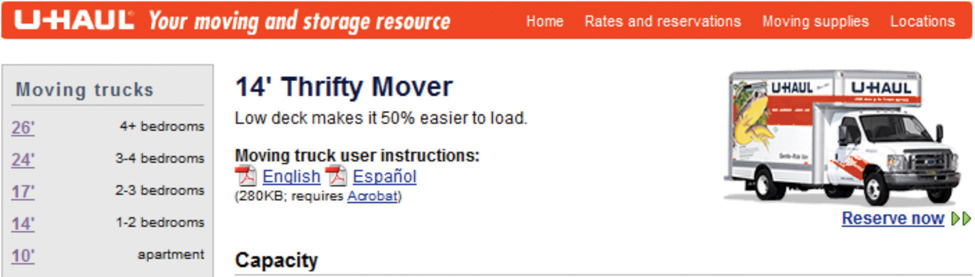
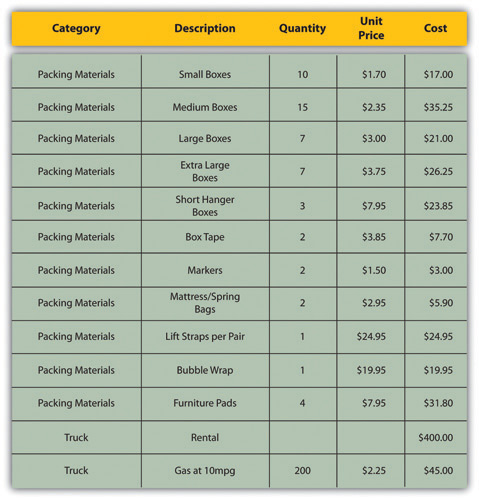
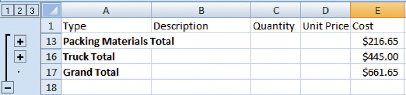
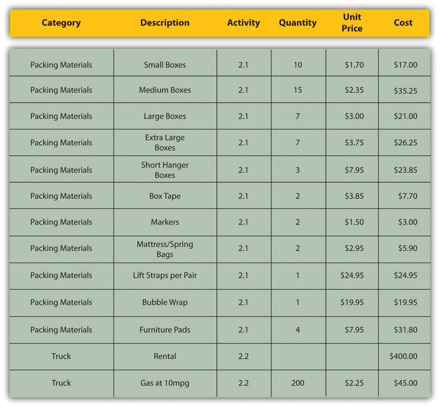
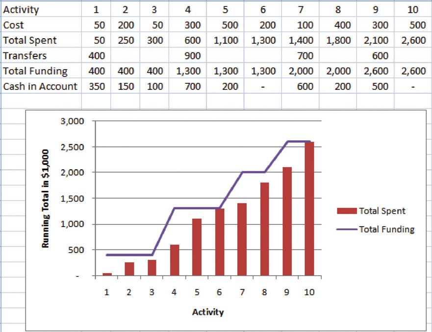
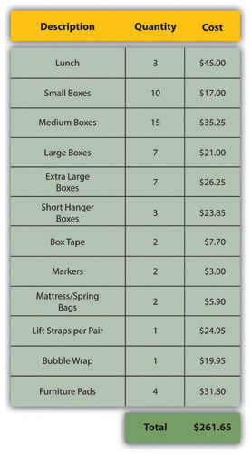
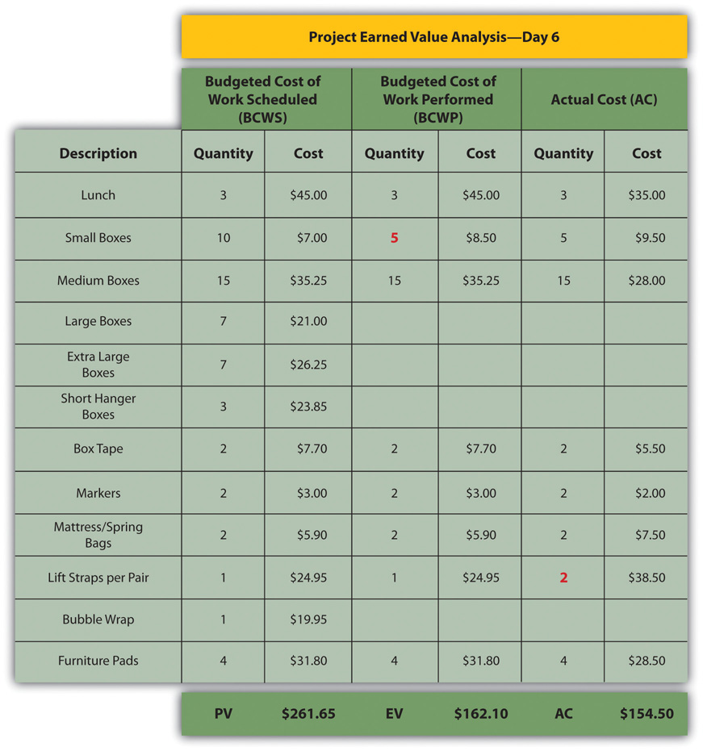
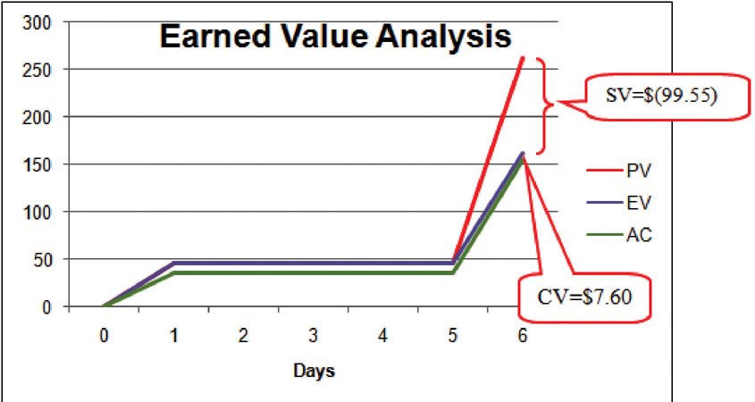
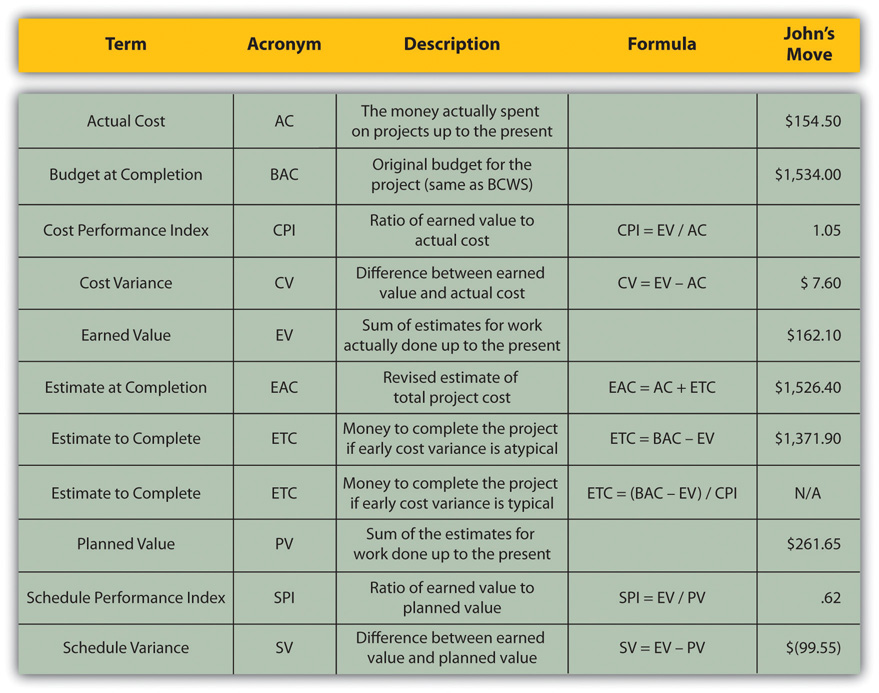
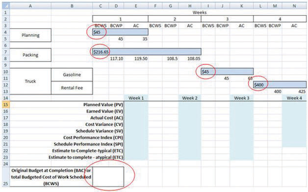

An important part of a project manager’s job is managing money. All types of organizations must manage their money well in order to fulfill their mission, including not-for-profit and government organizations. The tools and methods used to manage money on a project vary depending on the phase and complexity of the project. This chapter describes the methods used to estimate the cost of a project, create a budget, and manage the cost of activities while the project is being executed.
During the conceptual phase when project selection occurs, economic factors are an important consideration when choosing between competing projects. To compare the simple paybacks or internal rates of return between projects, an estimate of the cost of each project is made. The estimates must be accurate enough so that the comparisons are meaningful, but the amount of time and resources used to make the estimates should be appropriate to the size and complexity of the project. The methods used to estimate the cost of the project during the selection phase are generally faster and consume fewer resources than those used to create detailed estimates in later phases. They rely more on the expert judgmentDecisions based on incomplete information made by people who have extensive personal experience. of experienced managers who can make accurate estimates with less detailed information. Estimates in the earliest stages of project selection are usually made using estimates based from previous projects that can be adjusted—scaledMultiplied by an adjustment factor to make the new estimate proportional to the original.—to match the size and complexity of the current project or by applying standardized formulas.
An estimate that is based on other project estimates is an analogous estimateBudget estimate based on a similar project.. If a similar project cost a certain amount, then it is reasonable to assume that the current project will cost about the same. Few projects are exactly the same size and complexity, so the estimate must be adjusted upward or downward to account for the difference. The selection of projects that are similar and the amount of adjustment needed is up to the judgment of the person who makes the estimate. Normally, this judgment is based on many years of experience estimating projects, including incorrect estimates that were learning experiences for the expert.
In the John’s move example, John asked a friend for advice about the cost of his move. His friend replied, “I moved from an apartment a little smaller than yours last year and the distance was about the same. I did it with a fourteen-foot truck. It cost about $575 for the truck rental, pads, hand truck, rope, boxes, and gas.” Because of the similarity of the projects, John’s initial estimate of the cost of the move was less than $700 and he decided that the cost would be affordable and the project could go forward.
Less experienced managers who are required to make analogous estimates can look through the documentation that is available from previous projects. If those projects were evaluated using the Darnall-Preston Complexity Index (DPCI), the manager can quickly identify projects that have similar profiles to the project under consideration even if those projects were managed by other people. Comparing the original estimates with the final project costs on several previous projects with the same DPCI ratings gives a less experienced manager the perspective that it would take many years to acquire by trial and error. It also provides references the manager can use to justify the estimate.
If the project consists of activities that are common to many other projects, average costs are available per unit. For example, if you ask a construction company how much it would cost to build a standard office building, they will ask for the size of the building in square feet and the city in which the building will be built. From these two factors—size and location—the company’s estimator can predict the cost of the building. Factors like size and location are parametersMeasurable factors that can be used in an equation to calculate a result.—measurable factors that can be used in an equation to calculate a result. The estimator knows the average cost per square foot of a typical office building and adjustments for local labor costs. Other parameters such as quality of finishes are used to further refine the estimate. Estimates that are calculated by multiplying measured parameters by cost-per-unit values are parametric estimatesEstimates that are calculated by multiplying measured parameters by cost-per-unit values..
To estimate the size of the truck needed for John’s move, the parameter used by a truck rental company is the number of bedrooms, as shown below.
Figure 9.1 Number of Bedrooms Used for Parametric Cost Estimate
The moving company assumes that the number of bedrooms is the important parameter in determining how big a truck is needed for a move. For John’s move, he has a one-bedroom apartment, so he chooses the fourteen-foot truck. Once the size is determined, other parameters, such as distance and days, are used to estimate the cost of the truck rental.
Once the project is selected, more accurate estimates are often needed to raise funds and agree on contracts with vendors in the initiation phase.
John recalled that his friend also told him how tiring it was to do all the packing, loading, and driving himself, and some items were damaged when the load shifted inside the truck during the trip. John decides to call in favors from two friends, Dion and Carlita, to help him pack in Chicago and to hire some of the skilled labor like that needed to load the truck properly.
If services or products will be provided by vendors, the cost of those services can be determined by issuing a request for proposal (RFP)Requires a bidder to offer solutions and ideas on how to perform the scope of work and a price for performing that work.. The RFP describes the work, service, or product to be provided by the vendor and the quality level required. The RFP is sent to a list of vendors who are qualifiedMeets a standard of reliability and capability.—meet standards of reliability and capability—to perform this type of work. They respond with a proposal for completing the work described in the RFP, including an estimate of the cost. Some government organizations are required to use the qualified vendor with the lowest bid. Other organizations are not bound to take the lowest bid but are usually required to justify their reasons for not doing so.
John wants to find out how much it would cost to hire a skilled crew to load and secure the furniture in the truck and then have another crew from the same company meet him in Atlanta to unload the truck and help him unpack. He is not sure if any companies offer this option, so he decides to ask three moving companies for bids. He also decides to ask for bids on a standard move that includes all phases of packing, loading, transportation, and unloading as a comparison to see if his cost-saving plan is worth the extra effort.
The project management team can review the responses by several vendors to the RFP to determine if their estimate of the cost of that aspect of the project is close to the estimate made during the project selection stage. If the estimates by the vendors are much higher than expected, and if the project cannot be completed for the cost that was used to select the project, the selection decision might have to be reconsidered. Reconsidering the selection of the project should take into consideration the economic ratings of the competing projects that were not chosen and who the project champions are for the projects that would be affected.
Some vendors may suggest an alternative way to meet the objective of the RFP in a more cost-effective manner that does not match the specifics of the RFP. Such alternatives can reduce costs if they are acceptable.
The most accurate and time-consuming estimating method is to identify the cost of each item in each activity of the schedule, including labor and materials. If you view the project schedule as a hierarchy where the general descriptions of tasks are at the top and the lower levels become more detailed, finding the price of each item at the lowest level and then summing them to determine the cost of higher levels is called bottom-up estimatingSumming of estimates of each detail of the activity and project..
After evaluating the bids by the moving companies, John decides the savings are worth his time if he can get the packing done with the help of his friends. He decides to prepare a detailed estimate of costs for packing materials and use of a rental truck. He looks up the prices for packing materials and truck rental costs on company Web sites and prepares a detailed list of items, quantities, and costs, as shown below.
Figure 9.2 Detailed Cost Estimate
This type of estimate is typically more accurate than an analogous or parametric estimate. In this example, the sum of packing materials and truck expenses is estimated to be $661.25.
The detail can be rolled upSubtotaled.—subtotaled—to display less detail. This process is made easier using computer software. On projects with low complexity, the cost estimates can be done on spreadsheet software.
For example, the subtotal feature could be used in Excel and collapsed to show the subtotals for the two categories of costs, as shown below.
Figure 9.3 Sum of Detailed Costs by Type
On larger projects, software that manages schedules can also manage costs and display costs by activity and by category.
An activity can have costs from more than one vendor plus costs for labor and materials from internal sources. Detailed estimates from all sources can be reorganized so those costs that are associated with a particular activity can be grouped by adding the activity code to the detailed estimate, as shown in Figure 9.4 "Detailed Costs Associated with Activities".
Figure 9.4 Detailed Costs Associated with Activities
The detailed cost estimates can be sorted by activity and then subtotaled by activity to determine the cost for each activity.
Once the cost of each activity is estimated, it is possible to determine how much money is needed for each group of tasks and for the whole project.
The cost of each group of activities of the project can be estimated by summing the costs of the components of each activity in the group. This process of subtotaling costs by category or activity is called cost aggregationSum of component costs..
Because the costs are associated with activities and each activity has a start date and a duration, it is possible to calculate how much money needs to be spent by any particular date during the project. The money needed to pay for a project is usually transferred to the project account shortly before it is needed. These transfers must be timed so that the money is there to pay for each activity without causing a delay in the start of the activity. If the money is transferred too far in advance, the organization will lose the opportunity to use the money somewhere else, or they will have to pay unnecessary interest charges if the money is borrowed. A schedule of money transfers is created that should match the need to pay for the activities. The process of matching the schedule of transfers with the schedule of activity payments is called reconciliationMatching funds provided with funds spent.. Refer to Figure 9.5 "Fund Transfers and Expenditures" that shows the costs of ten major activities in a project. Funds are transferred into the project account four times. Notice that during most of the project, there were more funds available than were spent except at activity 6 when all the available funds were spent.
Figure 9.5 Fund Transfers and Expenditures
In the project budget profile shown in Figure 9.5 "Fund Transfers and Expenditures", there is no margin for error if the total of the first six activities exceeds the amount of funding at that point in the project.
Contractual agreements with vendors often require partial payment of their costs during the project. Those contracts can be managed more conveniently if the unit of measure for partial completion is the same as that used for cost budgeting. For example, if a contractor is pouring concrete for a large project, their contract may call for partial payment after 25 percent of the total volume of concrete is poured as determined by cubic yards of concrete.
Estimates
Consider a project in which you have been involved that used an estimating technique to provide numbers for the conceptual plan. Briefly describe the type of project and identify the estimating method used.
Projects seldom go according to plan in every detail. It is necessary for the project manager to be able to identify when costs are varying from the budget and to manage those variations.
If the total amount spent on a project is equal to or less than the amount budgeted, the project can still be in trouble if the funding for the project is not available when it is needed. There is a natural tension between the financial people in an organization, who do not want to pay for the use of money that is just sitting in a checking account, and the project manager, who wants to be sure that there is enough money available to pay for project expenses. The financial people prefer to keep the company’s money working in other investments until the last moment before transferring it to the project account. The contractors and vendors have similar concerns, and they want to get paid as soon as possible so they can put the money to work in their own organizations. The project manager would like to have as much cash available as possible to use if activities exceed budget expectations.
Most projects have something unexpected occur that increases costs above the original estimates. If estimates are rarely exceeded, the estimating method should be reviewed because the estimates are too high. It is not possible to predict which activities cost more than expected, but it is reasonable to assume that some of them will be. Estimating the likelihood of such events is part of risk analysis, which is discussed in more detail in a later chapter.
Instead of overestimating each cost, money is budgeted for dealing with unplanned but statistically predictable cost increases. Funds allocated for this purpose are called contingency reservesMoney held to pay for predictable but unspecified extra costs..Project Management Institute, Inc., A Guide to the Project Management Body of Knowledge (PMBOK Guide), 4th ed. (Newtown Square, PA: Project Management Institute, Inc., 2008), 173. Because it is likely that this money will be spent, it is part of the total budget for the project. If this fund is adequate to meet the unplanned expenses, then the project will complete within the budget.
If something occurs during the project that requires a change in the project scope, money may be needed to deal with the situation before a change in scope can be negotiated with the project sponsor or client. It could be an opportunity as well as a challenge. Money can be made available to the project to be used at the discretion of the manager to meet needs that would change the scope of the project. These funds are called management reservesMoney that is available for changing the scope of the project.. Unlike contingency reserves, they are not likely to be spent and are not part of the project’s budget baseline, but they can be included in the total project budget.Project Management Institute, Inc., A Guide to the Project Management Body of Knowledge (PMBOK Guide), 4th ed. (Newtown Square, PA: Project Management Institute, Inc., 2008), 177.
A project manager must regularly compare the amount of money spent with the budgeted amount and report this information to managers and stakeholders. It is necessary to establish an understanding of how this progress will be measured and reported.
In the John’s move example, he estimated that the move would cost about $1,500 and take about sixteen days. Eight days into the project, John has spent $300. John tells his friends that the project is going well because he is halfway through the project but has only spent a fifth of his budget. John’s friend Carlita points out that his report is not sufficient because he did not compare the amount spent to the budgeted amount for the activities that should be done by the eighth day.
As John’s friend points out, a budget report must compare the amount spent with the amount that is expected to be spent by that point in the project. Basic measures such as percentage of activities completed, percentage of measurement units completed, and percentage of budget spent are adequate for less complex projects, but more sophisticated techniques are used for projects with higher complexity.
A method that is widely used for medium- and high-complexity projects is the earned value management (EVM)Method of comparing the budgeted and actual costs of a project during the project. method. EVM is a method of comparing the budgeted and actual costs of a project periodically during the project. It combines the scheduled activities with detailed cost estimates of each activity. It allows for partial completion of an activity if some of the detailed costs associated with the activity have been paid but others have not. The earned value analysis method compares the anticipated cost of work that is scheduled to be done at a given point in time against what has been done and how much it actually cost.
The budgeted cost of work scheduled (BCWS)All the items in the cost estimate. See budget at completion (BAC). comprises the detailed cost estimates for each activity in the project. The amount of work that should have been done by a particular date is the planned value (PV)Sum of the items in the budgeted cost of work scheduled that should have been spent by a particular day.. These terms are used interchangeably by some sources, but the planned value term is used in formulas to refer to the sum of the budgeted cost of work up to a particular point in the project, so we will make that distinction in the definitions in this text for clarity.
On day six of the project, John should have taken his friends to lunch and purchased the packing materials. The portion of the BCWS that should have been done by that date (the planned value) is listed in Figure 9.6 "Planned Value for Lunch and Packing Materials". This is the planned value for day six of the project.
Figure 9.6 Planned Value for Lunch and Packing Materials
The budgeted cost of work performed (BCWP)The budgeted cost of work scheduled that has been done. is the budgeted cost of work scheduled that has been done. If you sum the BCWP values up to that point in the project schedule, you have the earned value (EV)Sum of budgeted expenses up to a particular point in the schedule..
The amount spent on an item is often more or less than the estimated amount that was budgeted for that item. The actual cost (AC)Sum of money spent so far. is the sum of the amounts actually spent on the items.
Dion and Carlita were both trying to lose weight and just wanted a nice salad. Consequently, the lunch cost less than expected. John makes a stop at a store that sells moving supplies at discount rates. They do not have all the items he needs, but the prices are lower than those quoted by the moving company. They have a very good price on lifting straps so he decides to buy an extra pair. He returns with some of the items on his list, but this phase of the job is not complete by the end of day six. John bought half of the small boxes, all of five other items, twice as many lifting straps, and none of four other items. John is only six days into his project, and his costs and performance are starting to vary from the plan. Earned value analysis gives us a method for reporting that progress. Refer to the figure below.
Figure 9.7 Planned Value, Earned Value, and Actual Cost
The original schedule called for spending $261.65 (PV) by day six. The amount of work done was worth $162.10 (EV) according to the estimates, but the actual cost was only $154.50 (AC).
The project manager must know if the project is on schedule and within the budget. The difference between planned and actual progress is the varianceDifference between estimated and actual.. The schedule variance (SV)Difference between the earned value (EV) and the planned value (PV). is the difference between the earned value (EV) and the planned value (PV). Expressed as a formula, SV = EV − PV. If less value has been earned than was planned, the schedule variance is negative, which means the project is behind schedule.
Planning for John’s move calls for spending $261.65 by day six, which is the planned value (PV). The difference between the planned value and the earned value is the scheduled variance (SV). The formula is SV = EV − PV. In this example, SV = $162.10 − $261.65 = $(99.55) A negative SV indicates the project is behind schedule.
The difference between the earned value (EV) and the actual cost (AC) is the cost variance (CV)Earned value minus actual cost.. Expressed as a formula, CV = EV − AC
The difference between the earned value of $162.10 and the actual cost of $154.50 is the cost variance (CV). The formula is CV = EV − AC. In this example, CV = $162.10 − $154.50 = $7.60.
A positive CV indicates the project is under budget.
The schedule variance and the cost variance provide the amount by which the spending is behind (or ahead of) schedule and the amount by which a project is exceeding (or less than) its budget. They do not give an idea of how these amounts compare with the total budget.
The ratio of earned value to planned value gives an indication of how much of the project is completed. This ratio is the schedule performance index (SPI)Ratio of earned value (EV) to planned value (PV).. The formula is SPI = EV/PV. In the John’s move example, the SPI equals 0.62 (SPI = $162.10/$261.65 = 0.62) A SPI value less than one indicates the project is behind schedule.
The ratio of the earned value to the actual cost is the cost performance index (CPI)Ratio of earned value (EV) to actual cost (AC).. The formula is CPI = EV/AC.
In the John’s move example, CPI = $162.10/$154.50 = 1.05 A value greater than 1 indicates the project is under budget.
Figure 9.8 Schedule Variance and Cost Variance on Day Six of the John’s Move Project
The cost variance of positive $7.60 and the CPI value of 1.05 tell John that he is getting more value for his money than planned for the tasks scheduled by day six. The schedule variance (SV) of negative $99.55 and the schedule performance index (SPI) of 0.62 tell him that he is behind schedule in adding value to the project.
During the project, the manager can evaluate the schedule using the schedule variance (SV) and the schedule performance index (SPI) and the budget using the cost variance (CV) and the cost performance index (CPI).
Partway through the project, the manager evaluates the accuracy of the cost estimates for the activities that have taken place and uses that experience to predict how much money it will take to complete the unfinished activities of the project—the estimate to complete (ETC)Estimate of the amount of money needed to complete the unfinished part of the project..
To calculate the ETC, the manager must decide if the cost variance observed in the estimates to that point are representative of the future. For example, if unusually bad weather causes increased cost during the first part of the project, it is not likely to have the same effect on the rest of the project. If the manager decides that the cost variance up to this point in the project is atypicalOpposite of typical—not typical.—not typical—then the estimate to complete is the difference between the original budget for the entire project—the budget at completion (BAC)Budget for the entire project.—and the earned value (EV) up to that point. Expressed as a formula, ETC = BAC − EV
In John’s move, John was able to buy most of the items at a discount house that did not have a complete inventory and, he chose to buy an extra pair of lift straps. He knows that the planned values for packing materials were obtained from the price list at the moving company where he will have to buy the rest of the items, so those two factors are not likely to be typical of the remaining purchases. The reduced cost of lunch is unrelated to the future costs of packing materials, truck rentals, and hotel fees. John decides that the factors that caused the variances are atypical. He calculates that the estimate to complete (ETC) is the budget at completion ($1,534) minus the earned value at that point ($162.10), which equals $1,371.90. Expressed as a formula, ETC = $1,534 − $162.10 = $1,371.90.
If the manager decides that the cost variance is caused by factors that will affect the remaining activities, such as higher labor and material costs, then the estimate to complete (ETC) needs to be adjusted by dividing it by the cost performance index (CPI). For example, if labor costs on the first part of a project are estimated at $80,000 (EV) and they actually cost $85,000 (AC), the cost variance will be 0.94. (Recall that the cost variance = EV - AC).
To calculate the estimate to complete (ETC) assuming the cost variance on known activities is typical of future cost, the formula is ETC = (BAC – EV)/CPI. If the budget at completion (BAC) of the project is $800,000, the estimate to complete is ($800,000 – $80,000)/0.94 = $766,000.
If the costs of the activities up to the present vary from the original estimates, it will affect the total estimate for the project cost. The new estimate of the project cost is the estimate at completion (EAC)Revised project budget based on actual cost to date plus the estimate to complete (ETC).. To calculate the EAC, the estimate to complete (ETC) is added to the actual cost (AC) of the activities already performed. Expressed as a formula, EAC = AC + ETC.
The revised estimate at completion (EAC) for John’s move at this point in the process is EAC = $154.50 + $1,371.90 = $1,526.40.
Refer to Figure 9.9 "Summary of Terms and Formulas for Earned Value Analysis" for a summary of terms and formulas.
Figure 9.9 Summary of Terms and Formulas for Earned Value Analysis
Estimating Earned Value
Consider a project you are familiar with in which the contractor or service provider who was performing the work needed to be replaced before the job was completed. Describe how the value of the contractor’s efforts up to that point was determined and how that evaluation compared to an earned value analysis.
Exercises at the end of the chapter are designed to strengthen your understanding and retention of the information recently acquired in the chapter.
The questions in this section refer to the project budget shown below.
Figure 9.10 Example for Short Answer Questions
This project has three completed activities whose durations are indicated by the blue bars in row 2. The budgeted cost of work scheduled for each task is shown on the bar in row 2. The budgeted cost of work scheduled for each week is shown on row 3. Notice that the amounts in row 3 add up to the amounts shown on the bars. Rows 4 and 5 indicate the budgeted cost of work performed and actual cost. Notice that the second task started a week late.
Write several paragraphs to provide more in-depth analysis and consideration when answering the following questions.
The exercises in this section are designed to promote exchange of information among students in the classroom or in an online discussion. The exercises are more open ended, which means that what you find might be completely different from what your classmates find, and you can all benefit by sharing what you have learned.
In this exercise, you apply the formulas of earned value (EV) analysis to the John’s Move project. Complete the exercise by following these instructions:
Navigate to the location where the student supplement files are stored and open Ch09EV.xls in a spreadsheet program such as MS Excel. Save the file on your computer as Ch09EVStudentName.xls. Four tasks span four weeks. The budgeted cost of work scheduled (BCWS) is shown at the beginning of each bar, as shown in Figure 9.11 "EV Analysis for John’s Move".
Click cell C25 to select it. In the Number group, click the Increase Decimal button two times, if necessary, to display two decimal places. See Figure 9.12 "BAC Calculation".
Move the mouse pointer to the Enter button on the Formula bar. See Figure 9.13 "PV Calculation for Week 1". Entering formulas by using this button keeps the selection on the current cell.
In the spreadsheet, click cell E16. Type =D5+D8 and then, on the Formula bar, click the Enter button. The EV is the sum of the budgeted work that has been performed up to that point in the project. See Figure 9.14 "EV Calculation for Week 1".
Click cell E19. Type =E16−E15 and then, on the Formula bar, click the Enter button. The schedule variance (SV) for week 1 is EV minus the PV. See Figure 9.15 "AC, CV, and SV Calculations for Week 1".
Refer to the definitions of CPI and SPI. Enter formulas in cells E20 and E21 to calculate the CPI and SPI. Recall that formulas begin with an equal sign and use cell names instead of the numbers in those cells. Use the Decrease Decimal or Increase Decimal buttons as needed to display two decimal places. See Figure 9.16 "CPI and SPI Calculations for Week 1".
Refer to the definitions of estimate to complete (ETC) for typical and atypical variances in AC. Enter formulas in cells E22 and E23 to calculate the ETC for typical and atypical CV. Recall that the BAC value is in cell C25. Compare your results to Figure 9.17 "ETC at the End of Week 1 for Typical and Atypical AC".
Refer to the definitions for CV, SV, CPI, SPI, and ETC and write formulas in cells H18 through H23 to calculate those values at the end of week 2. See Figure 9.18 "Calculations for Week 2".
In the spreadsheet, apply what you have learned to perform similar calculations for weeks 3 and 4. See Figure 9.19 "Calculations for Weeks 3 and 4".
Click cell E5. Type 30 and then, on the Formula bar, click the Enter button. Notice that all the calculations that depend on the AC in this cell are recalculated. See Figure 9.20 "Values That Depend on the AC in Cell E5 Change".
Prepare the worksheet for printing:
In the Page Setup dialog box, on the Page tab, click the Landscape button and the Fit To button. See Figure 9.21 "Printout Oriented Horizontally and Forced to Fit on One Page".
In the Page Setup dialog box, on the Header/Footer tab, click the In the Header dialog box, click the Left section, and then type your name. Click the Center section and then type John’s Move. Click the Right section box and type For InstructorName, substituting your instructor’s name. See Figure 9.22 "Your Name and Your Instructor’s Name in the Header".
Review your work in Ch09EVStudentName.xls and use the following rubric to determine its adequacy:
| Element | Best | Adequate | Poor |
|---|---|---|---|
| File name | Ch09EVStudentName.xls | Ch09EVStudentName.xlsx | Did not include student name |
| Create a spreadsheet to perform an EV analysis | Formulas that produce the values shown in Figure 9.16 "CPI and SPI Calculations for Week 1" and Figure 9.17 "ETC at the End of Week 1 for Typical and Atypical AC", depending on the value in cell E5; names in header for printout | Same as Best | Could do formulas for weeks 1 and 2 but could not apply knowledge to weeks 3 and 4; errors in formulas; missing header |
Review your work in Ch09EVStudentName.doc and use the following rubric to determine its adequacy:
| Element | Best | Adequate | Poor |
|---|---|---|---|
| File name | Ch09EVStudentName.doc | Same name saved as .docx file | Used a different name |
| Use dedicated project management software to manage changes to the WBS | Three screen captures that show the development of the spreadsheet | Same as Best | Missing screens |